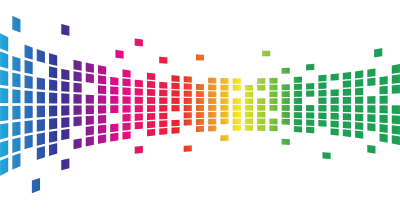

(This is how our homepage would look if we had opted to use MARKDOWN for it. Obviously, the markdown document can contain HTML.)
WEIRD is a multi-modal web framework.
It converts documents (HTML, markdown, or even Word documents) into websites through a series of Python-meets-JS shenanigans.
Yeah, we get it. WEIRD is weird. But it can easily produce surprisingly good (and fairly sustainable) websites from little more than just a few documents (even Word documents!).
Download and try WEIRD from its dedicated GitHub repo.
If we were better at marketing, we'd say something like 'blogging reinvented'.
Pages and blogs can be created in HTML, markdown, and Word. It is also possible to combine formats.
Potential benefits:
Customisation is possible but not necessary. Without additional customisation, WEIRD produces a site like this one.
Potential benefits:
WEIRD can be expanded and customised using CSS/JS, jQuery (pre-installed), Bootstrap (pre-installed), and other libraries (upon import).
Potential benefits:
Depending on how you approach it, WEIRD websites can be incredibly fast and fairly sustainable.
Potential benefits:

WEIRD generates static websites, even from Word documents. These are excellent for SME websites, portfolios, project sites, event websites, documentation pages, marketing websites, and landing pages.
Since WEIRD is multi-modal, you can design key sections using HTML, CSS, JS, and markdown, yet blog easily by simply uploading Word documents.
WEIRD can produce more sustainable websites that emit less carbon emissions than the average. WEIRD is therefore optimal for anyone interested in the environment and/or demonstrating a commitment to sustainability.
WEIRD is a product by polyzentrik.com, released under an Apache 2.0 open source license.
We kindly ask you to leave the branding in the footer intact or make a small voluntary payment via our payments gateway if you wish to remove it.